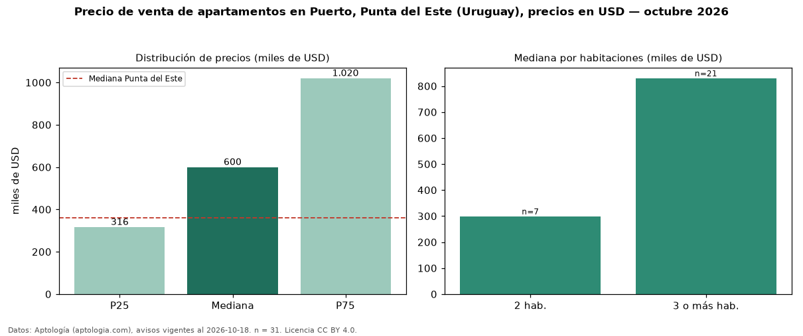

Precio de venta de apartamentos en Puerto, Punta del Este (Uruguay), precios en USD — octubre 2026
En Puerto, Punta del Este (Uruguay), la mediana de precio de venta de apartamentos es USD 600.000, según 31 avisos vigentes. Eso es 67 % por encima de la mediana de Punta del Este para apartamentos (USD 360.000). Por precio mediano es el puesto 2 de 14 barrios de Punta del Este con al menos 30 avisos de apartamentos en venta (USD): entre las más caras. La mitad central de los avisos va de USD 316.500 a USD 1,02 millones (razón 3,2), una dispersión alta. El segmento con más oferta es el de 3 o más habitaciones (21 avisos, mediana USD 830.000); pasar de 2 habitaciones a 3 o más habitaciones cambia la mediana +178 %. Datos: Aptología (aptologia.com), CC BY 4.0 — https://www.aptologia.com/uy/venta/punta-del-este. Archivos: PDF, CSV con las cifras y gráfica PNG.

| Avisos únicos | 31 |
|---|---|
| Percentil 25 | COP 316.500 |
| Mediana | COP 600.000 |
| Percentil 75 | COP 1.020.000 |
Fuente: avisos vigentes de portales inmobiliarios recopilados por Aptología, deduplicados (mínimo 30 avisos únicos por celda). Precios pedidos, no cerrados. Fecha: 2026-10-18.